Von Straßwalchen ging es nach Genua und mit der Fähre weiter nach Tunis. 2,5 Wochen Tunesien mit vier Maschinen — Küste, Sahara, Salzsee und Dünen.
Die Maschinen
- Suzuki DR500
- Yamaha XT600
- KTM 990 Adventure
- Husqvarna 701
Nach der Überfahrt führte die erste Phase entlang der Mittelmeerküste über Tunis, Bizerta und Tabarka. Danach ging es ins Landesinnere und Richtung Sahara.
Die Route
- Strasswalchen → Genua (Anreise)
- Fähre Genua → Tunis
- Tunis · Bizerta · Tabarka (Küstenregion)
- Gafsa · Tozeur · Douz (Sahara-Durchquerung)
- Salzsee-Überquerung, Dünenfahrten, Berber-Dörfer
- Rückkehr über Tunis → Genua → Strasswalchen
Die Salzsee-Überquerung war surreal, die Dünenfahrten richtig hart. Pannen mitten in der Wüste und improvisierte Reparaturen auf der Straße gehörten dazu — Werkstatt-Glück gab es nicht überall.
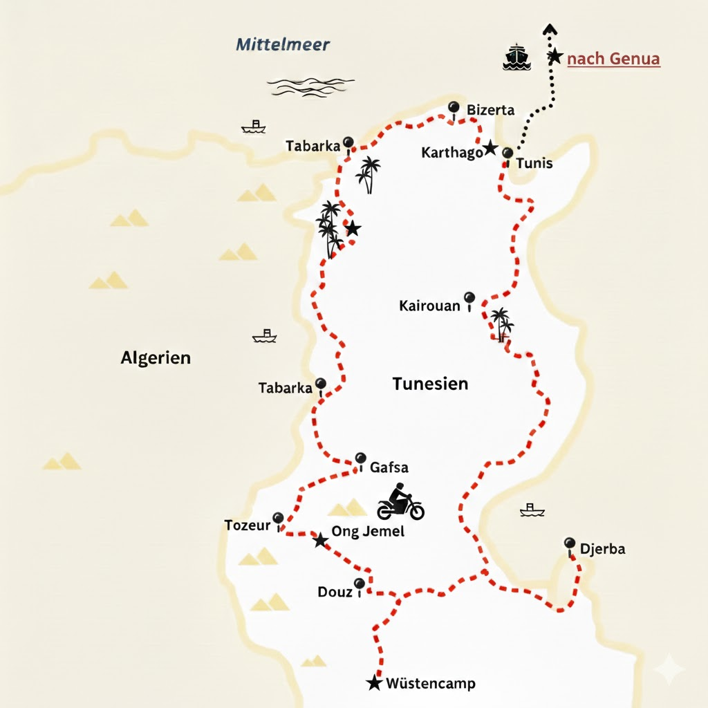
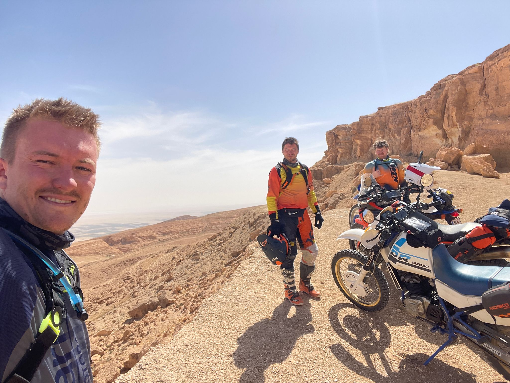
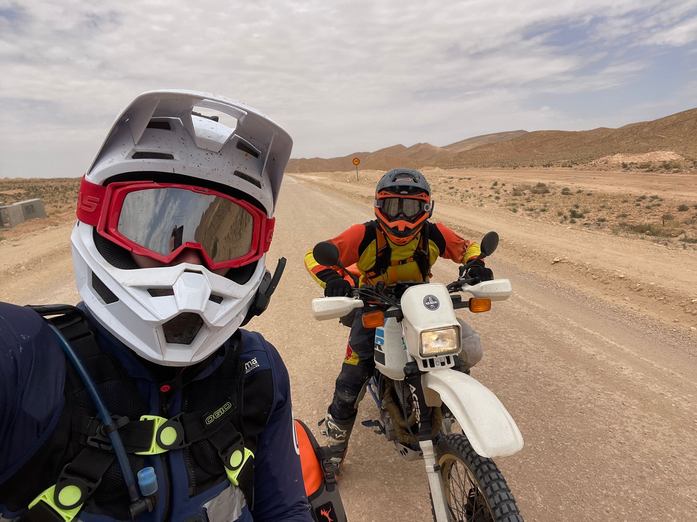
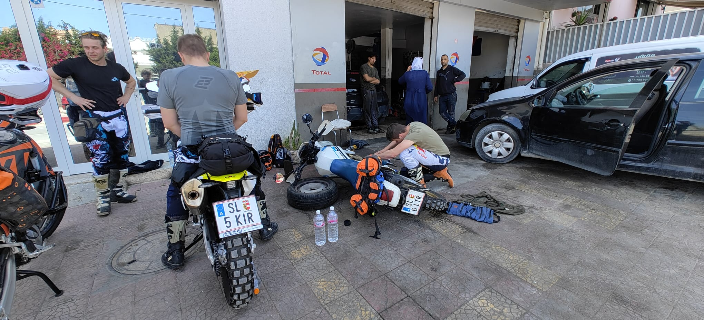
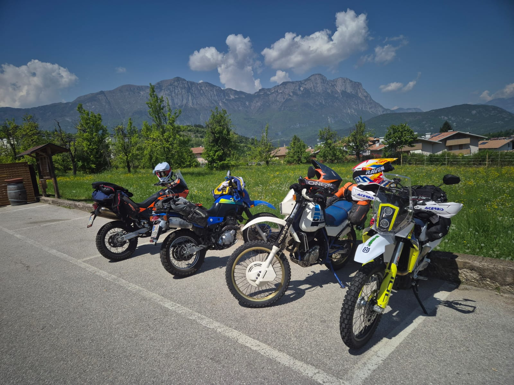
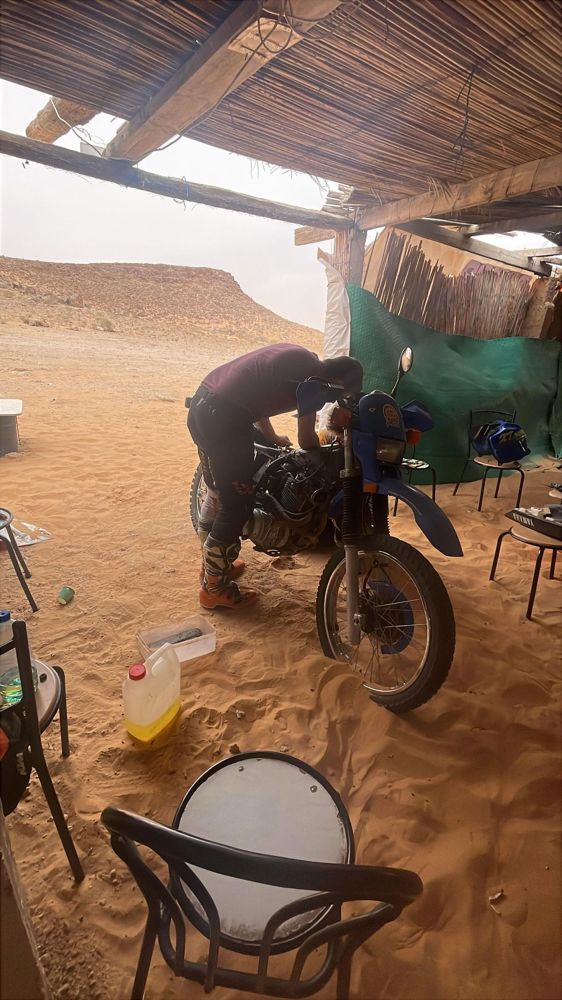
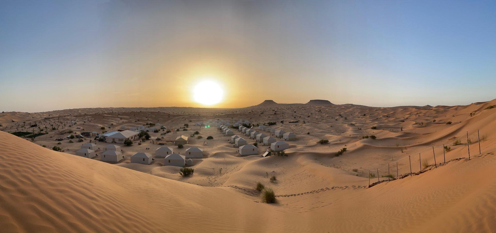

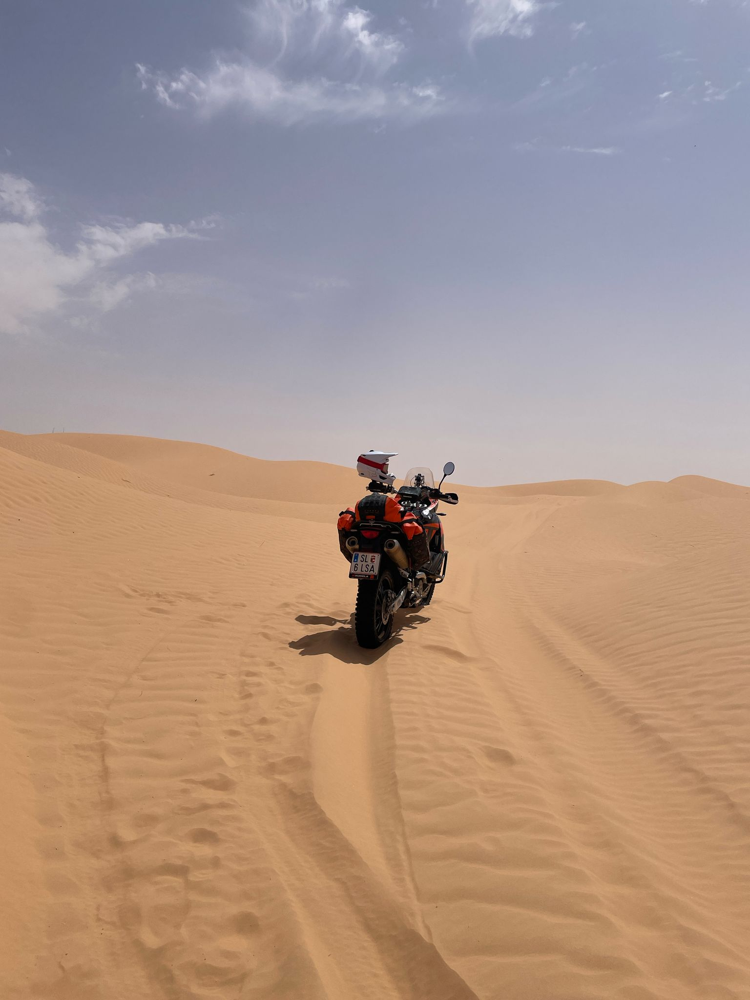
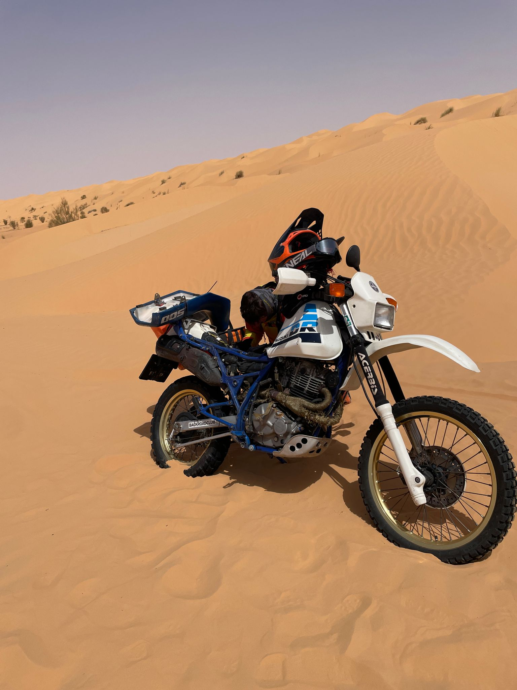
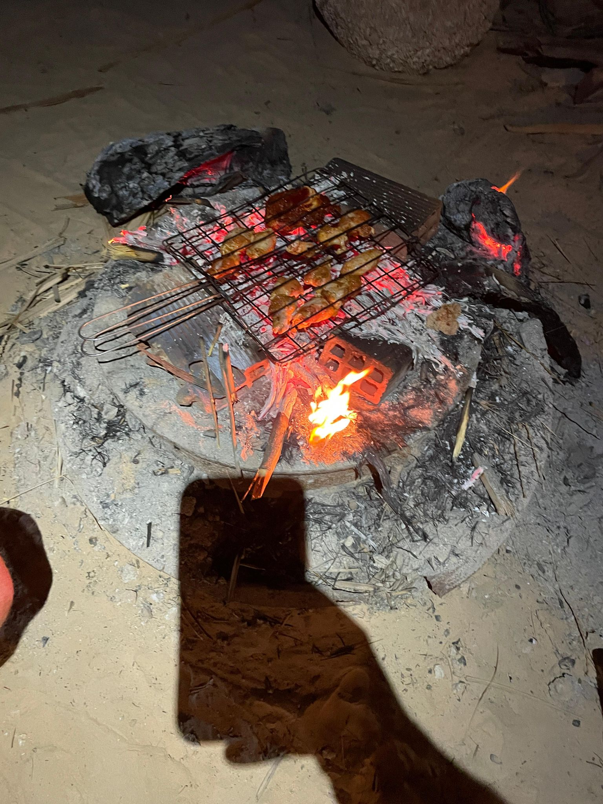
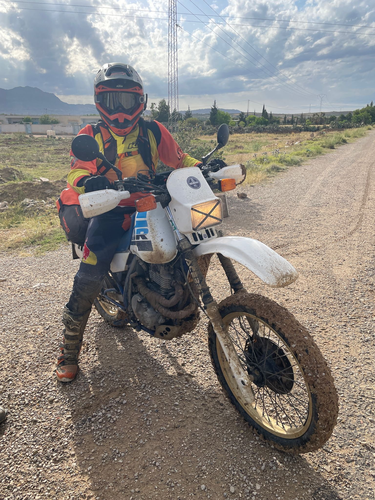
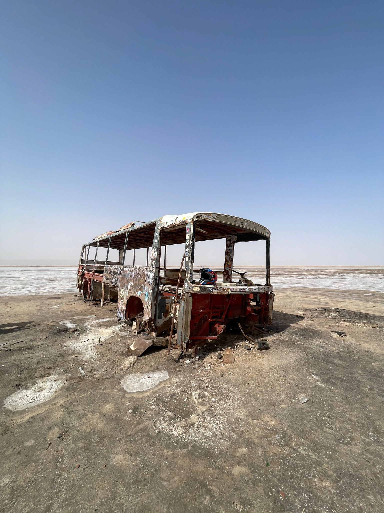
„Tunesien hat uns alles abverlangt — Sand, Sonne, Pannen — aber genau das macht so eine Tour unvergesslich."